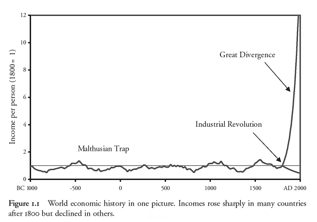

Clark's "World economic history in one
picture"

For ECO 310, the focus is on modern economic growth, and the sharp rise of incomes after the 'Industrial Revolution' .
We
will sidestep Clark's conjecture that humanity was caught in a
"Malthusian Trap" before the IR, as well as his conjecture that poor
nations now have seen declining incomes since the IR.
Modern economic growth: sustained growth of per capita output with growing (or stable) population.
source: Gregory Clark, A Farewell to Alms: A Brief Economic History of the World (Princeton, 2007), p. 2.